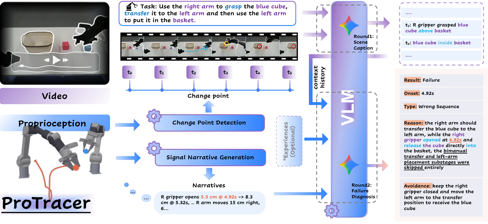
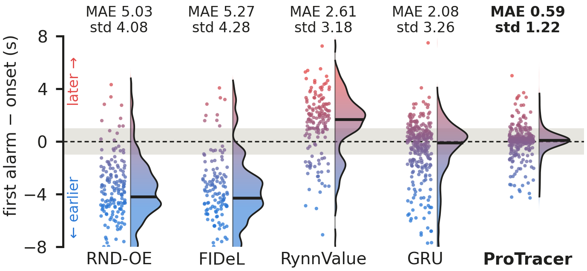
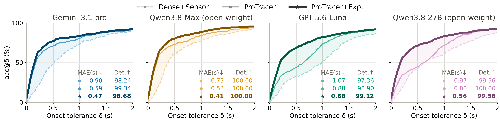

Action-boundary localization
Gripper and end-effector dynamics identify meaningful transitions instead of densely sampling redundant video frames.
PROJECT PAGE
Australian Institute for Machine Learning, Adelaide University
We introduce ProTracer, a training-free framework for comprehensive robot manipulation failure analysis. It uses proprioceptive dynamics to find temporally informative action boundaries and converts robot-state signals into structured narratives that a vision-language model can reason over together with visual observations.
ProTracer supports failure detection, categorization, explanation, avoidance, and the new task of failure onset localization: identifying the earliest moment when an execution deviates from a valid task-completion trajectory and ultimately leads to failure. We also introduce FailTime, a benchmark with synchronized visual and proprioceptive observations and frame-level onset annotations.
Proprioception provides temporal precision; vision-language reasoning provides semantic understanding.

Gripper and end-effector dynamics identify meaningful transitions instead of densely sampling redundant video frames.
Robot-state measurements become concise physical descriptions that are jointly analyzed with keyframes and task context.
From proprioceptive trajectories to keyframes, scene understanding, and grounded failure diagnosis.
ProTracer achieves sub-second onset localization in the zero-shot setting while improving conventional failure diagnosis.
| Model | Failure Onset | Detection ↑ | Type ↑ | Reason ↑ | ||
|---|---|---|---|---|---|---|
| MAE ↓ | @0.5s ↑ | @1s ↑ | ||||
| ViFailback-8B | 1.10 | 46.06 | 67.49 | 97.80 | 57.64 | 62.56 |
| KITE | 1.75 | 14.53 | 33.25 | 96.26 | 35.71 | 50.86 |
| Gemini-3.1-pro | 1.32 | 27.83 | 55.42 | 95.82 | 49.51 | 54.30 |
| Gemini-3.1-pro + raw sensor | 0.90 | 48.03 | 73.15 | 98.24 | 60.34 | 61.92 |
| ProTracer | 0.59 | 71.18 | 81.03 | 99.34 | 72.91 | 69.40 |
| ProTracer + Exp. | 0.47 | 77.34 | 83.99 | 98.68 | 77.83 | 69.20 |
Onset metrics are reported in seconds / percent. Failure diagnosis scores are percentages.
Proprioception provides temporal grounding, vision supplies semantic context, and Sign-CPD selects the most informative action boundaries.
| Model | Failure Onset | Detect. ↑ | Type ↑ | ||
|---|---|---|---|---|---|
| MAE ↓ | @0.5s ↑ | @1s ↑ | |||
| ProTracer (Sign-CPD) | 0.59 | 71.18 | 81.03 | 99.34 | 72.91 |
| w/o sensor | 1.18 | 30.79 | 59.85 | 98.24 | 57.39 |
| w/o vision | 1.88 | 23.65 | 48.52 | 90.33 | 15.02 |
| Selector | Failure Onset | Detect. ↑ | Type ↑ | ||
|---|---|---|---|---|---|
| MAE ↓ | @0.5s ↑ | @1s ↑ | |||
| Optical Flow | 0.73 | 66.50 | 76.11 | 98.68 | 64.78 |
| Continuous CPD | 0.79 | 66.26 | 77.34 | 98.90 | 66.50 |
| Sign-CPD | 0.59 | 71.18 | 81.03 | 99.34 | 72.91 |
For causal runtime detectors, the first alarm is evaluated as a failure-onset estimate. ProTracer remains zero-shot and is not used as a policy-stopping detector.
| Detector | Failure Detection | Failure Onset | ||||
|---|---|---|---|---|---|---|
| AUROC ↑ | TPR ↑ | TNR ↑ | MAE ↓ | @0.5s ↑ | @1s ↑ | |
| RND-OE | 0.57 | 44.83 | 79.59 | 5.03 | 0.74 | 2.96 |
| FIDeL | 0.60 | 34.73 | 95.92 | 5.27 | 0.25 | 1.97 |
| RynnValue-8B | 0.85 | 38.18 | 93.88 | 2.61 | 1.72 | 5.67 |
| GRU (Onset Supervised) | 0.74 | 71.43 | 65.31 | 2.08 | 18.97 | 33.99 |
| ProTracer (zero-shot) | – | 99.26 | 100.00 | 0.59 | 71.18 | 81.03 |


@article{dong2026protracer,
title = {ProTracer: Proprioception-Guided Failure Diagnosis in Robot Manipulation},
author = {Dong, Chang and Hosseinzadeh, Mehdi and Wong, King Hang and Liu, Lingqiao and Fraysse, Francois and Dayoub, Feras and Nguyen, Minh Hoai},
year = {2026}
}